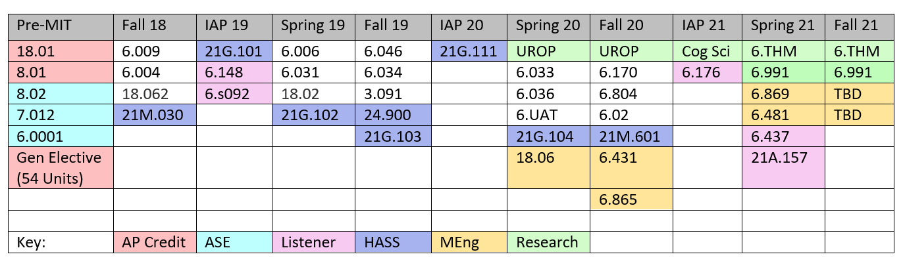
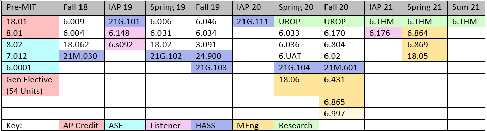

Speedrunning College | December 2020
This blog, like me, is a work-in-progress. I wrote this blog after finishing undergrad @ MIT in 2.5 semesters. Now that I've graduated with my master's a year later, I'm distilling my thoughts and will complete this blog soon! Last update: Feb 2021
Like ~40% of MIT undergraduates, I majored in Course 6 (Electrical Engineering and Computer Science), particularly, 6-3 Computer Science and Engineering. It’s feasible and not uncommon for students to complete their CS degree in under 4 years, allowing them to take a semester off to intern or study abroad, pick up another major/minor, graduate early, or graduate with both Bachelors and Masters degrees in 4 years. Speaking from personal experience, it turns out that it’s possible to graduate from MIT with a 6-3 degree in 2.5 years, and potentially a Masters of Engineering (MEng) in 3 years, though I now plan to take 3.5 years (see Appendix for previous plan). I don’t believe graduating early is necessarily a goal to strive towards, but rather a personal choice based on the priorities of the individual. I still don’t know whether I made the right choice, or whether there is such thing as right or wrong among ambiguous-but-good alternatives (the grass is always greener...). But what I do know is I’ve received many questions about scheduling advice and graduating early over the years, so I decided to record notes and reflections in a blog post. I’ve found past students’ blogs on similar topics to be very helpful, so I hope that the following provides useful insights and resources, regardless of whether you intend to graduate early. Fair warning, much of this article is tailored towards Course 6.
Contents
General MIT Advice
Scheduling
Let’s start with the basics. Any MIT Bachelors of
Science (SB) Degree requires 17 General Institute Requirement
(GIR) classes, including 8 Humanities, Arts, and Social Sciences (HASS) classes.
For the department you are majoring in, you need to take 180-198
units beyond the GIRs. Course 6 undergraduates can apply
for the Masters
of
Engineering (MEng)
program,
which requires an additional 6 classes, thesis (2+ semesters of research), and industry internship. For
current
MIT students, here is a better site for
figuring out which classes satisfy which Course 6 requirements.
Below are the classes I took and plan to take. For simplicity, I’ve only listed class numbers, but you can find the class descriptions here and subject evaluations here. Additionally, the HKN Underground Guide strives to provide more detailed and candid subject evaluations on Course 6 classes specifically. Other useful class planning resources include Firehose: a popular, student-created online tool for planning class schedules. The classes on Firehose are updated on a semesterly basis. CourseRoad and FireRoad are other tools better suited for long-term planning, i.e. degree/class plans spanning several semesters.

To preface the following discussion, it's important to remember that there is an extremely wide range of skills and backgrounds among students entering MIT. Personally, I started college with little CS experience beyond AP CS, and science fairs and math competitions were practically unheard of at my high school. MIT is hard, but you definitely don't need genius or pedigree to succeed. And MIT Admissions Blogs can sometimes exaggerate how hard it is, relative to the average MIT student. Everyone's experiences and limits are different, but there exists a toxic mindset that it's imperative to bite off more than you can chew because someone else is taking N classes. As you can see, my schedules for most semesters were relatively reasonable, but I never felt like I could've taken on much more. So just remember: respect your own limits, take care of yourself, and make sure you are still learning. It's okay to drop classes and change plans because, if this blog post provides any assurance, it's that you can still graduate on time within 4 years.
AP and ASE Credit
MIT is rather stingy about awarding credit
for AP tests. As of 2020, the only STEM GIR credit
you can get through AP is 8.01 Physics I (Mechanics), if you score 5's on both AP Physics C exams. You can get
credit for 18.01 Calculus (Single Variable) by passing the math diagnostic test during orientation week, provided
you already scored a 5 on AP Calculus BC.
MIT also
offers
Advanced
Standing Exams (ASE) as an option to test out of STEM GIRs. The best time to take ASEs is during
orientation week, since they are graded P/NR. ASEs are supposed to be equivalent to final exams, and there's
really
no harm in trying an ASE as a prefrosh, besides stress and sacrificing a few hours of orientation week.
To prepare
for an ASE, I suggest reviewing the class lectures, assignments, and practice exams on
OpenCourseWare (OCW) and MITx. I personally took 8.02, 7.012, and 6.0001 ASE,
and I found the above resources to be enough to pass. For 6.0001 and 7.012, I especially recommend the lectures (with exercises!) on MITx, and for 8.02,
the MITx lectures are not complete, but you can find the rest of the content on Youtube/OCW.
IAP and HASS
Independent Activities Period (IAP) is MIT's January term where
students can take classes, enter competitions, work externships, teach abroad, or just chill. Since a lot of the
IAP classes are special subjects which offer only elective credit, if you really want to knock out classes over
IAP, you should consider taking a HASS. There is a 12 unit credit limit for IAP, but you can always enroll in
other
classes as
listener (not taking for grade/credit). I took Chinese I over IAP, which gave me the same HASS credit as the
regular semester class, at the cost of cramming an entire semester's worth of material into one month. The class
met daily for 3 hours, and homework took about 2 hours per day. I continued taking Chinese II - IV the following
semesters, fulfilling my HASS concentration. Growing up, my parents refused to send me to
Chinese school, and we spoke Cantonese not Mandarin, so learning Mandarin and basic reading/writing was a really
meaningful part of my college education. Language HASS classes require a bit more time commitment than some other
HASS classes,
but MIT's Chinese language classes are well-taught, and the instructors are very
kind and reasonable.
IAP is also a great time to knock out PE classes (4 required). I took Badminton (highly recommend) and Zumba during my second IAP. I also took web.lab on listener during my first IAP. It's also a huge time commitment class, but you definitely get out what you put in. Web.lab taught me to love web development and building things, and how to not be useless at hackathons. It's honestly one of my favorite classes and probably also the reason this website exists. Other popular project-and-competition-based IAP programming classes include Pokerbots (which I took this past IAP!) and Battlecode. Other cool IAP opportunities include externships (month-long internships) and teaching abroad through MISTI GTL, though you probably need to apply early in the fall semester to be considered for these opportunities.


Job Hunt
A significant time commitment and potential source of anxiety not captured in the table above is related to jobs:
either working as
course staff (TA/LA/grader/tutor), or looking for a job for summer or full-time. With regards to
working as course staff, it's a good way to give back to a class you enjoyed, get paid, and help secure a TA-ship
in future
semesters (especially important to plan ahead if you want a funded
MEng). Various types of course staff include grader, lab assistant (LA), and teaching
assistant (TA), with increasing time commitment for each. Some classes will reach out to you to be a
grader/LA/TA if you did well in the class. There is also a semesterly EECS
TA application form,
or
you could email an instructor directly if you are interested in a position. Similarly, tutoring Course
6 classes
for HKN is another way to help students and earn money during the semester. I was an LA for 6.004 and 6.009
in
2019. It
is fulfilling to help students
get unstuck during office hours (OH), but frankly, LAs are glorified debuggers, and keep in mind that
reviewing
material and staffing OH is a weekly time commitment to be factored into your schedule. I also volunteer tutored
for HKN. The 1:1 tutoring was a nice change of pace, and you can afford to go more in-depth since there's no
queue of students waiting to be helped.
To address the latter concern of job interviews, all I can say is take 6.006 and 6.009, have some personal coding projects to talk about, and most importantly, practice Leetcode. Interviews take time, so reserve time in your schedule proportional to the number of companies you're applying for, and remember you only need (and can only accept) one offer at the end of the day. And once you land one internship, you'll likely have the option to avoid the next interview season if you decide to return to the company. This is not recommended, but at least you won't be jobless in any case, which helps alleviate some pressure. Another thing I'd like to address is the unhealthy pressure to secure an internship after freshman year, which is a tall order since a lot of companies don't hire freshmen. Freshman fall, I got ghosted by all the big tech companies' freshman-specific internship programs. I practiced Leetcode over winter break, and in late January, I applied to regular software engineer (SWE) internships as c/o 2021 instead of 2022 (since I was planning on graduating early; I'm not encouraging dishonesty lol) and started getting interviews and job offers. I ended up interning at Amazon my freshman summer, and living in Seattle was one of the most amazing experiences I've ever had. Looking back though, doing a MISTI program abroad or a meaningful UROP would probably have been a fulfilling experience as well, so you don't need to have a SWE internship to have a great freshman summer.
Research
TODO: this; still figuring it out-- oops! Check back later :)
Personal Reflections
Too short? Did I get the full College Experience™️? What is the College Experience™️, anyway? The part where I talk about Imposter Syndrome, FOMO, COVID, regrets, social anxiety, extracurriculars,
and what it means to be fulfilled. (Spoiler: ofc I don't know the answer to this)
TODO: re-evaluate my life OwO
Below is my previous course plan, involving working with a different lab/thesis project, which would allow me to
complete the MEng within 3 years (graduate Summer 2021).
TODO: elaborate on this plan and the decision process.
